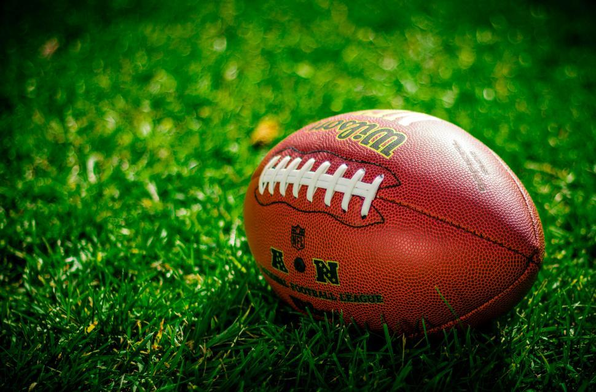

Persontly in my opinion I like to watch college football more than I do than the NFL. I think college is beter to watch because their are way more big hits and deep balls. The atmosphere is way better too, and it is way louder and fun at college games. But if you are going to watch the NFL, you should watch the lions because of their trich plays and funny celibrations that they do. The lions also have the best players skil wise and to watch because of players like Jamosion Willoms, Jamo is very fast so when he gets the ball he is so fast and fun to watch.
Amon ra st brown is a wide ricever that plays for the lions, I would say he is our best player because he rarly droppes the ball and because when he catches it he gets lots of yards after the catch. Amon ra st brown wears number 14 and I actully have a jersey of him,last year he broke some body part and still played through it, his goal was to get over 1000 yards last year and he crushed that goal geting about 1300.
Adian Huchinson is a devensive tackle that plays on the lions, I would say he is our best player because he can get to the qourterback realy fast and because he id not slow. Last yerar Adian would have won defencive player of the year if he did not get injered and if he kept his work up. Adian got hurt in week 5, his leg was fully twisted and it looked bad, but overal Adian is a very good player and lions fans love him a lot, I love him evern more because he went to the university of Michigan and was evern better there.
The nfl is very fun to watch but I do not think it is better than college ball, but I do like to watch it a lot, I do not like the overtime rules in the nfl but in college it is good. The rules in overtime in college ball is that each team gets a posetion from the 25 yard line for the first posetion, but on the second posetion it is the same but you have to go for 2 pounts if you score. After 2 posetions each team has 1 play to score from the 2 yard line and it keeps going, I like this because every play counts. In the NFL each team gets one chance to score from the other 25 yard line but there is only 10 minutes. If both teams have the same amount od pounts at the end of the ten minutes the game ends in a tie at. That is just one reason on why college ball is better than the NFL but I could go on forever.
.jpg)


photo by unknown by Freerange Stock
photo by unknown by Wikimedia Commons